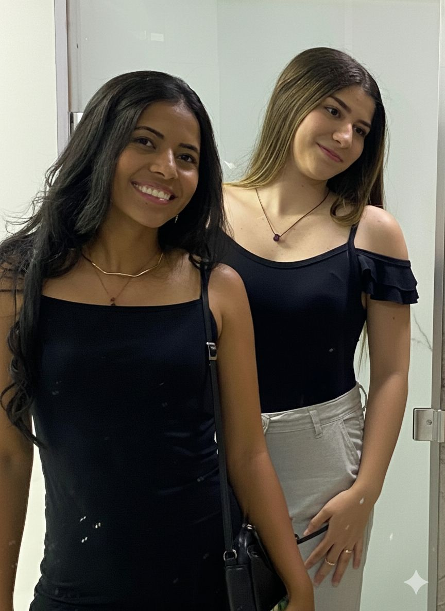
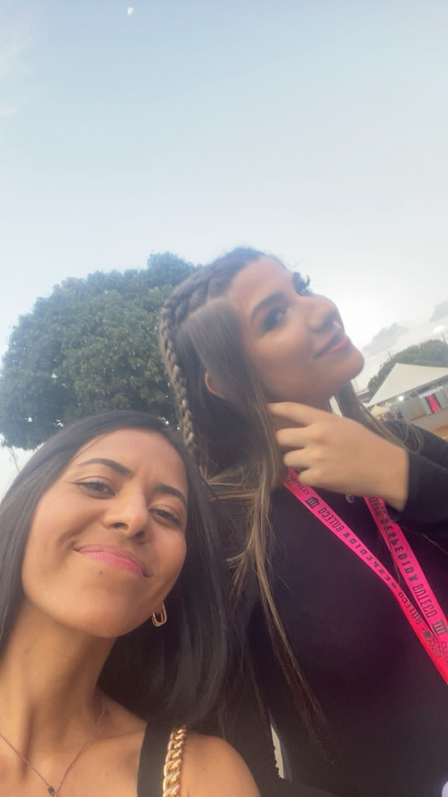

Amo nossas fotos (mesmo não tendo muitas).


Neném, eu queria algo que ficasse pra sempre, algo que você possa ver quando quiser… então aqui está.
Bom… hoje são 28/11, exatamente 23:20, faltando 7 dias para o aniversário da mulher do sorriso mais lindo do mundo. Eu me sinto a pessoa mais feliz da vida, porque tenho uma princesa linda que cuida de mim, me dá carinho, me enche de beijinhos e melhora 100% dos meus dias.
Quando estou com você, me sinto amada de várias formas até nas nossas briguinhas, quando você fala pra eu não fazer isso ou não fazer aquilo. Eu amo isso, porque sinto que sou alguém muito importante na sua vida.
Às vezes eu sou a pessoa mais difícil do mundo pra demonstrar sentimentos, mas eu demonstro tirando sua paciência 😝 (minha melhor forma de demonstrar).
Mas enfim… parabéns, meu bem. Desejo tudo de melhor na sua vida: muita saúde, muita paz e paciência pra me aguentar. Eu agradeço sempre a Deus por ter colocado você na minha vida sem você eu não seria nem metade da pessoa que eu me tornei.
No “segue-me” eu chorei tanto pensando em ti… pensando: “caramba, por um lado um enorme medo de não estar fazendo a coisa certa, e por outro lado uma pessoa que me aproximou mais de Deus e fez tudo para que eu me tornasse alguém melhor”.
Eu te amo, amor. Obrigada por tudo! 💗